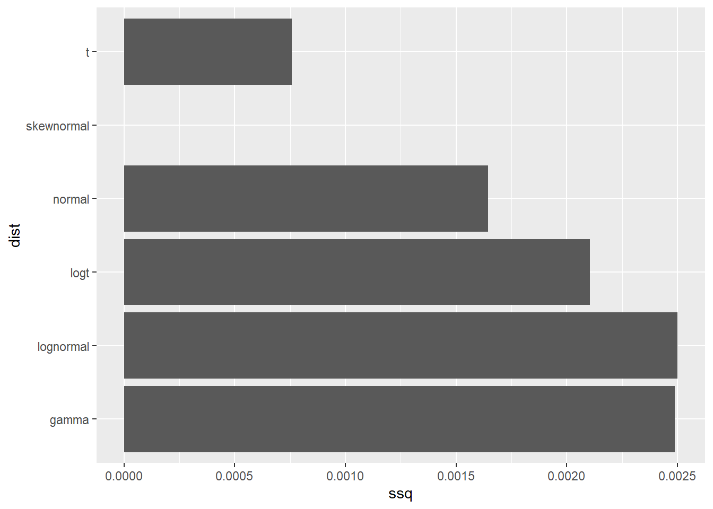
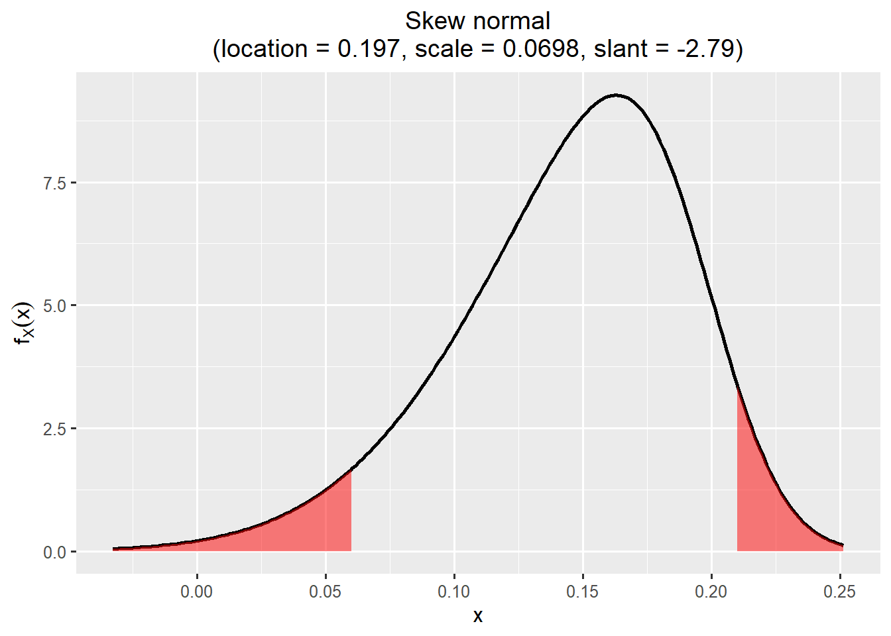
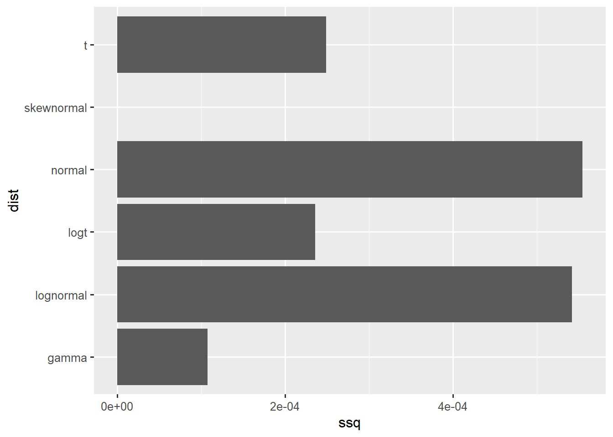
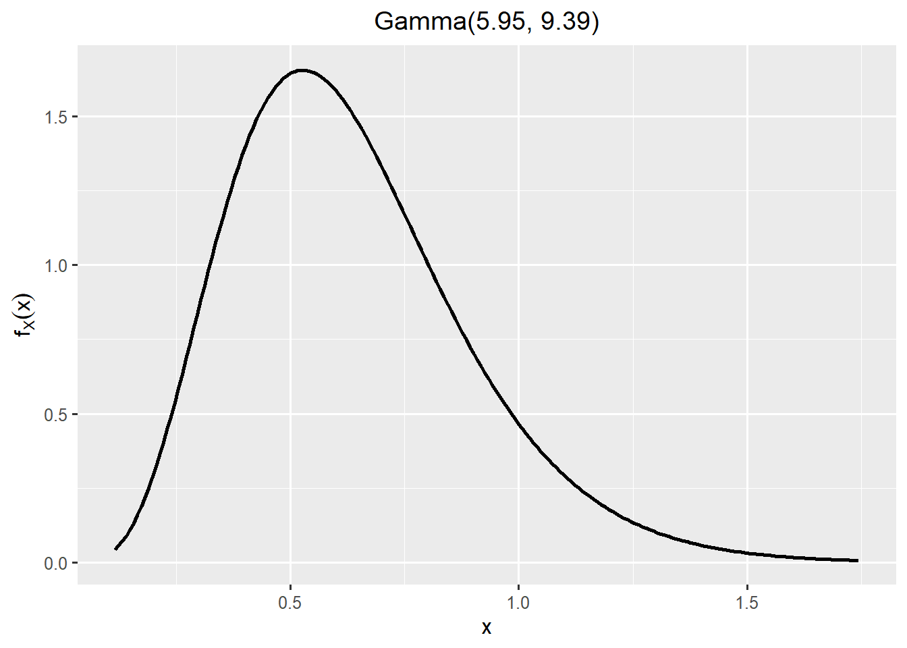
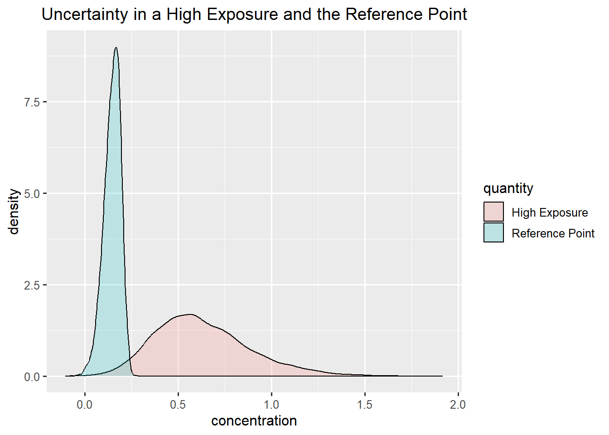
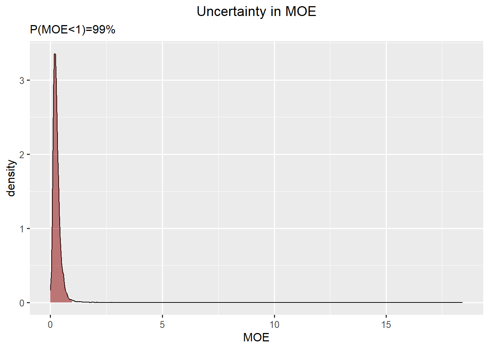
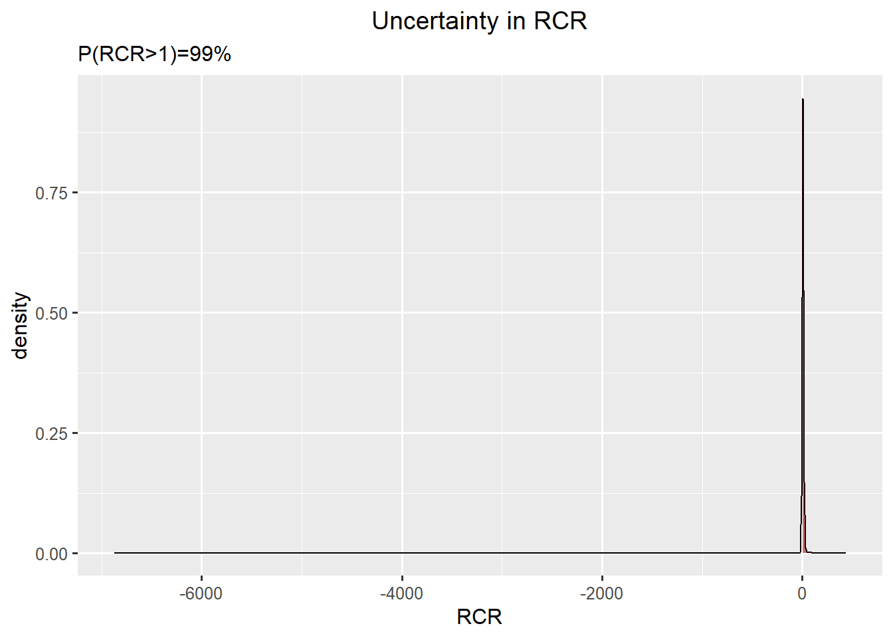

$Normal
mean sd
1 0.1492205 0.04007987
$Student.t
location scale df
1 0.1497456 0.02845681 3
$Skewnormal
location scale slant
1 0.1968077 0.06980073 -2.788872
$Gamma
shape rate
1 21.42747 140.6492
$Log.normal
mean.log.X sd.log.X
1 -1.897159 0.2046353
$Log.Student.t
location.log.X scale.log.X df.log.X
1 -1.8975 0.1496427 3
$Beta
shape1 shape2
1 NA NA
$mirrorgamma
shape rate
1 NA NA
$mirrorlognormal
mean.log.X sd.log.X
1 NA NA
$mirrorlogt
location.log.X scale.log.X df.log.X
1 NA NA NA
$ssq
normal t skewnormal gamma lognormal logt beta
1 0.001644973 0.0007581116 7.295898e-12 0.002487694 0.00249963 0.002105911 NA
mirrorgamma mirrorlognormal mirrorlogt
1 NA NA NA
$best.fitting
best.fit
1 skewnormal
$vals
[,1] [,2] [,3]
[1,] 0.06 0.15 0.21
$probs
[,1] [,2] [,3]
[1,] 0.05 0.5 0.95
$limits
lower upper
1 0 Inf
$notes
NULL
attr(,"class")
[1] "elicitation"Exercise. Food safety assessment with uncertainty analysis
MVEN10 Risk Assessment in Environment and Public Health
Exercise overview
We do this jointly in class.
Background
We can never be completely certain about the future, either in science, or in everyday life. Even when there is strong evidence that something will happen, there will almost always be uncertainty about the outcome. But by taking account of this uncertainty, we often can make better, more transparent decisions about things that may affect the outcome.
The European Food Safety Authority (EFSA) has developed a guidance for uncertainty analysis in scientific assessment which requires all assessment to say
- what sources of uncertainty have been identified
and contain
- a characterisation of their overall impact on the assessment conclusion.
The reason is that uncertainty of scientific conclusions has important implications for decision making and it is important to communicate this uncertainty for the transparency of assessments.
Purpose
- To practice performing a probabilistic uncertainty analysis.
Content
A human chemical risk assessment problem
A probabilistic uncertainty analysis using expert judgement and Monte Carlo-simulation
Duration
45 minutes
Reporting
Be prepared to report back during and at the end of the exercise.
References
Tutorial videos on EFSA’s topic page on uncertainty (examples in the chemical area)
Key concepts (17 minutes)
Methods and options for basic assessment of uncertainty (27 minutes)
Description of the assessment
The example is taken from the human health risk assessment of inorganic arsenic in food by EFSA that constituted one of the case studies.
Here we are to reproduce part of the uncertainty analysis. More specifically, the part where they perform probabilistic uncertainty analysis that a high exposure would exceed the Benchmark Dose (BMD) (which is the same that the MOE is less than 1).
Hazard assessment
Estimates of benchmark dose as μg iAs/kg bw per day was identified by the CONTAM Panel for different critical effects. A lower, median and upper value for the BMD were derived from model averaging of a BMD modelling.
| Critical effect | BMDL | BMD | BMDU |
|---|---|---|---|
| Skin cancer | 0.06 | 0.15 | 0.21 |
| Bladder cancer | 0.15 | 1.33 | 5.46 |
- Which quantiles does the BMDL, BMD and BMDU corresponds to?
Exposure assessment
The ranges and medians of the 95th percentile dietary exposure estimates for iAs seen over different consumption surveys and for two relevant age groups are:
| Age group | Low value | Mid value | High value |
|---|---|---|---|
| Infants | 0.21 | 0.6 | 1.20 |
| Toddlers | 0.24 | 0.51 | 0.99 |
- Decide which quantiles does the Low, Mid and High value corresponds to.
Load packages
Probabilistic uncertainty analysis
Characterise uncertainty in the Reference Point
- Choose one of the critical effects and find a probability distribution describing uncertainty about the BMD for that effect. Use the SHELF tool, where you feed in your own values.
- Choose one of the distributions. You can justify your choice as the one having the lowest sum of squares.


- Generate a report. In the report you can see how to draw random numbers from the chosen probability distribution.
Characterise uncertainty in a high exposure
$Normal
mean sd
1 0.6004057 0.2043064
$Student.t
location scale df
1 0.6002239 0.1334065 3
$Skewnormal
location scale slant
1 0.3447033 0.3815849 2.628322
$Gamma
shape rate
1 5.950066 9.3859
$Log.normal
mean.log.X sd.log.X
1 -0.5116764 0.3644407
$Log.Student.t
location.log.X scale.log.X df.log.X
1 -0.511229 0.2372064 3
$Beta
shape1 shape2
1 NA NA
$mirrorgamma
shape rate
1 NA NA
$mirrorlognormal
mean.log.X sd.log.X
1 NA NA
$mirrorlogt
location.log.X scale.log.X df.log.X
1 NA NA NA
$ssq
normal t skewnormal gamma lognormal logt
1 0.0005540256 0.0002489426 1.103311e-11 0.0001079138 0.00054172 0.0002361558
beta mirrorgamma mirrorlognormal mirrorlogt
1 NA NA NA NA
$best.fitting
best.fit
1 skewnormal
$vals
[,1] [,2] [,3]
[1,] 0.21 0.6 1.2
$probs
[,1] [,2] [,3]
[1,] 0.025 0.5 0.975
$limits
lower upper
1 0 Inf
$notes
NULL
attr(,"class")
[1] "elicitation"

- Generate a report. In the report you can see how to draw random numbers from the chosen probability distribution.
Uncertainty in a high exposure and the Reference Point

Characterise uncertainty in the Margin of Exposure
A Margin of Exposure (MOE) is defined as \[MOE=\frac{\text{Reference Point}}{\text{high expsoure}}\]
A \(MOE < 1\) corresponds to \(\text{high exposure} < \text{Reference Point}\) and a risk. Risk is unaccepatble if \(P(MOE < 1)\) is too high.

Characterise uncertainty in the Risk Characterisation Ratio
